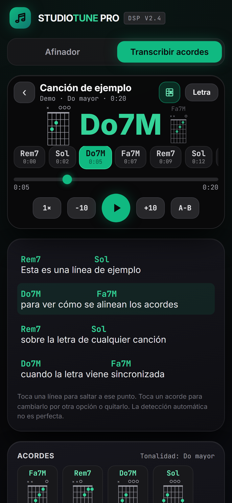

STUDIO
TUNE
PRO
Transcribir acordes
Los acordes de tu canción,
sobre la letra
.
↥
Importa un audio o grábalo
MP3, M4A, WAV u OGG, o lo que suena en el teléfono.
▦
Diagramas de guitarra
El acorde que suena y el siguiente, dibujados.
♪
Cambia el tono y la velocidad
Sube o baja el tono del audio, o tócalo más lento.
✎
Corrígelo con un toque
La detección automática no es perfecta: tú tienes la última palabra.

Gratis:
github.com/felimena-maker/studiotune-pro
Captura con la canción de ejemplo de la app.